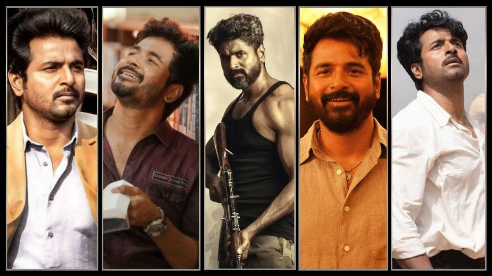

Sivakarthikeyan is a popular Indian actor, playback singer, producer, and television presenter who mainly works in Tamil cinema. He started his career as a television host and later became one of the leading actors in the Tamil film industry. He is known for his energetic performances, comedy, and family-friendly movies. Some of his popular films include Doctor, Don, Maaveeran, and Amaran. Sivakarthikeyan is admired for his hard work, humble nature, and inspiring journey from television to cinema.
✨A fan meeting of Sivakarthikeyan is a special event where fans gather to meet their favorite actor. During the event, fans can interact with him, take photographs, ask questions, and enjoy various entertainment programs. Sivakarthikeyan often shares his experiences, thanks his supporters for their love, and encourages young people to follow their dreams. These fan meetings create memorable moments and strengthen the bond between Sivakarthikeyan and his fans.✨
More than 1,000 fans are expected to attend the Sivakarthikeyan Fan Meeting. Fans from different cities may come together to celebrate, interact, and enjoy the event.
Sivakarthikeyan made his debut as a lead actor in the Tamil movie Marina, released in 2012 and directed by Pandiraj. The film is a comedy-drama that tells the story of children living near Marina Beach in Chennai. Sivakarthikeyan's natural acting and charming screen presence were appreciated by audiences. Marina marked the beginning of his successful journey in the Tamil film industry and helped him gain recognition as an actor.